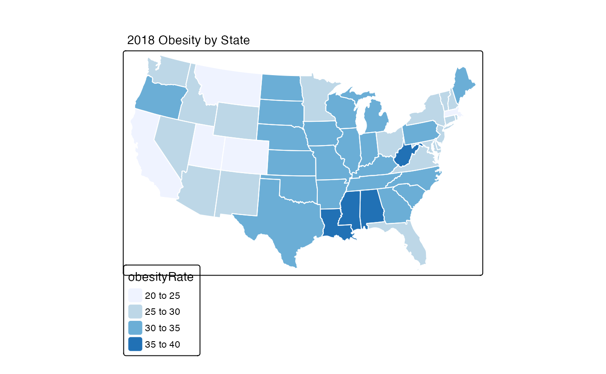

Uses the tmap package to generate a thematic map at the county level. Input consists of a dataframe with county identifiers.
stateMap( data = NULL, parameter = NULL, state_SPDF = "USCensusStates_02", palette = "YlOrBr", breaks = NULL, conusOnly = TRUE, stateCode = NULL, projection = NULL, stateBorderColor = "gray50", title = NULL )
| data | Dataframe containing values to plot a state map. This dataframe
must contain a column named |
|---|---|
| parameter | Name of the column of data in |
| state_SPDF | SpatialPolygonsDataFrame with US States. |
| palette | A palette name or a vector of colors based on RColorBrewer. |
| breaks | Numeric vector of break points. Must be 1 greater than |
| conusOnly | Logical specifying CONtinental US state codes. |
| stateCode | Vector of state codes. |
| projection | Specified method to represent surface of Earth. |
| stateBorderColor | The color of the state border to display. |
| title | Text string to use as the plot title. |
A ggplot object.
See tmap::tm_fill() for a more detailed description of
the following parameters:
palette
n
breaks
# \donttest{ library(MazamaSpatialPlots) setSpatialDataDir("~/Data/Spatial") loadSpatialData("USCensusStates_02") stateMap( data = example_US_stateObesity, parameter = "obesityRate", state_SPDF = "USCensusStates_02", palette = "BuPu", stateBorderColor = "white", title = "2018 Obesity by State" )# }